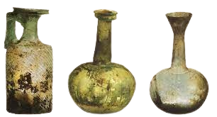
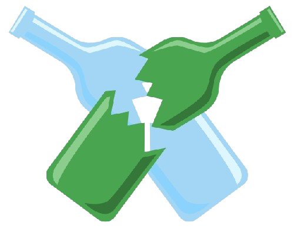

Sua História
ㅤㅤA história do vidro remonta a milhares de anos, com as primeiras evidências de sua produção datando de cerca de 2000 a.C. na Mesopotâmia e no Egito. Inicialmente, o vidro era produzido artesanalmente, sendo utilizado principalmente para a fabricação de pequenos objetos decorativos e recipientes.
ㅤㅤDurante a Idade Antiga, o vidro tornou-se uma parte importante da cultura e do comércio. Os fenícios, por exemplo, aprimoraram as técnicas de sopro de vidro, permitindo a criação de formas mais complexas e úteis. No Império Romano, o vidro ganhou popularidade e começou a ser utilizado em janelas, revolucionando a arquitetura.
ㅤㅤA produção de vidro se expandiu ao longo da Idade Média, especialmente nas oficinas da Itália e da Boêmia, onde a fabricação de vidro fino e colorido se tornou uma arte. Com a Revolução Industrial, o vidro começou a ser produzido em larga escala, tornando-se acessível a uma maior parte da população e sendo utilizado em diversos produtos, desde embalagens até utensílios domésticos.
ㅤㅤHoje, o vidro é um material versátil, utilizado em arquitetura, embalagens, eletrônicos e muito mais. Sua reciclagem e reutilização têm se tornado uma prática comum, refletindo uma preocupação crescente com a sustentabilidade e a preservação ambiental.
Composição
ㅤㅤO vidro é composto principalmente por sílica (dióxido de silício), que é a base do material. Outros componentes, como soda (carbonato de sódio) e cal (óxido de cálcio), são adicionados para alterar as propriedades do vidro e facilitar seu processamento. A mistura é aquecida a altas temperaturas até se tornar líquida e, em seguida, moldada na forma desejada.
ㅤㅤAlém da sílica, podem ser adicionados corantes e outros aditivos para criar vidros coloridos ou com propriedades específicas, como resistência ao calor ou ao impacto. O processo de resfriamento é crucial para a formação do vidro, pois influencia suas características finais, como dureza e transparência.
Tipos de Vidro
ㅤㅤExistem muitos tipos de vidros que apesar de partirem da mesma base, possuem composições diferentes, de acordo com a finalidade a que se destinam.
| Tipo | Aplicações |
|---|---|
| Vidro Temperado | Utilizado em janelas e portas de segurança, é mais resistente a impactos. |
| Vidro Laminado | Composto por duas ou mais camadas, usado em para-brisas e segurança. |
| Vidro Float | Vidro plano, utilizado em janelas e fachadas. |
| Vidro Colorido | Usado em decoração e arquitetura, disponível em várias cores. |
| Vidro Leitoso | Usado em iluminação e decoração, proporciona difusão da luz. |
| Vidro Reciclado | Produzido a partir de vidro reciclado, reduzindo impacto ambiental. |
| Vidro Antirreflexo | Utilizado em telas e vitrines, minimiza reflexos indesejados. |
| Vidro Soprano | Usado na fabricação de garrafas e utensílios de vidro. |
| Vidro de Borossilicato | Resistente a temperaturas extremas, usado em utensílios de laboratório. |
Como Funciona a Reciclagem do Vidro
ㅤㅤA reciclagem de vidro é um processo essencial para a sustentabilidade, permitindo a reutilização de um material que pode ser reciclado indefinidamente sem perda de qualidade. O primeiro passo é a coleta de garrafas, frascos e outros itens de vidro. É importante separar o vidro por cor, transparente, verde e âmbar, pois essa separação melhora a eficiência do processo de reciclagem e resulta em produtos de melhor qualidade.
ㅤㅤApós a coleta, o vidro é transportado para centros de reciclagem, onde passa por um processo de limpeza. Isso envolve a remoção de rótulos, tampas e outras impurezas. Em seguida, o vidro é triturado e transformado em pequenos pedaços chamados cullet. Este cullet é crucial, pois requer menos energia para ser derretido do que o vidro virgem, o que resulta em uma economia significativa de recursos.
ㅤㅤO cullet é então misturado com matérias-primas novas e aquecido em fornos a altas temperaturas, geralmente acima de 1400 graus Celsius. Esse calor derrete o vidro, que pode ser moldado em novos produtos, como garrafas, potes e até mesmo materiais de construção. O uso de vidro reciclado não apenas economiza energia e reduz a necessidade de extração de novas matérias-primas, mas também diminui a quantidade de resíduos enviados a aterros sanitários.
ㅤㅤAlém dos benefícios ambientais, a reciclagem de vidro também gera empregos e pode impulsionar a economia local. Programas de reciclagem eficazes contribuem para a conscientização sobre a importância da sustentabilidade e a redução do consumo de recursos naturais. Ao escolher produtos feitos de vidro reciclado, os consumidores podem apoiar práticas sustentáveis e ajudar a preservar o meio ambiente.